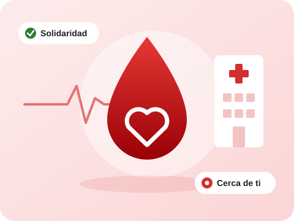

O+
Hospital Rebagliati
- Jesús María · hace 15 min
- Paciente: Caso 001 (demo)
- Unidades requeridas: 3
Conectamos a personas que necesitan sangre con donantes compatibles mediante solicitudes validadas por centros de salud.

Un proceso simple, claro y verificado.
Datos del paciente y centro de salud.
Solo se publican solicitudes verificadas.
Se alerta a personas compatibles y cercanas.
Pedidos validados por centros de salud. Revisa si puedes ayudar.
O+
A+
B-
Encuentra un centro cercano y revisa cómo llegar.
Sección en construcción: se implementará en el siguiente avance.
Prototipo académico de SangreLima · Solicitudes, datos y ubicaciones ilustrativos.